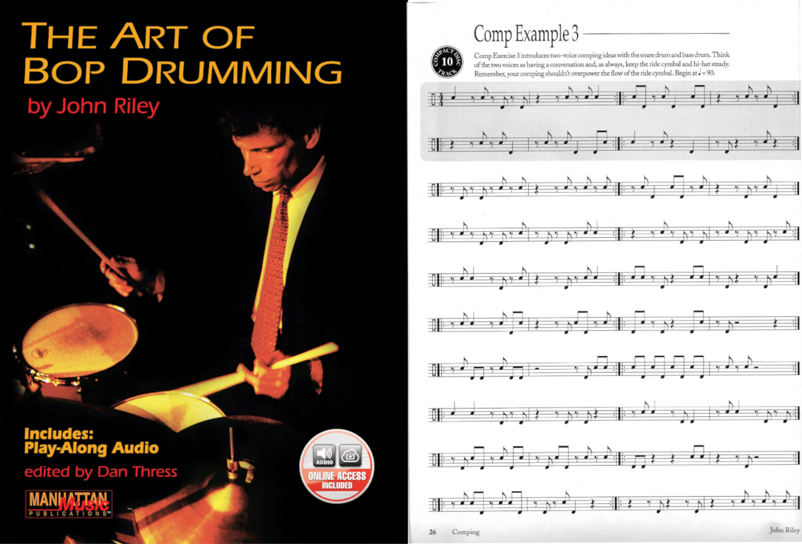

Blog
Transcription: “Cafo” — Animals as Leaders
Posted on March 20, 2022

I really have no business doing this… but there’s no denying that, even 13 years later, the first Animals as Leaders album still puts quite a spell on people, especially drummers. If you go to the music video for the album’s standout track, “Cafo”, you’ll see tons of people gushing over the drumming.
Well, here’s the thing: the drums are programmed. It’s actually pretty obvious. They don’t sound very good, the hats and ride cymbals are typically ignored in favor of crash/china cymbal barrages, and a lot of the licks don’t really make sense from a drummer’s perspective. Read More . . .
Transcription(s): The Nick Mason Fill Recipe
Posted on March 16, 2022

As I wrote last week, I’ve been listening to some Pink Floyd lately, as I often do at the start of the year. I regard Pink Floyd as one of the best bands out there, mainly because of their songwriting, vision, and ambition… but I’ve struggled to find a way to talk about them on the site. I don’t want to pick apart one of their tunes from a compositional perspective, since other (more knowledgable) people have already done that better than I could. And I don’t want to do a big transcription excerpt of the drumming on a Pink Floyd tune. Read More . . .
Know Your Tempos: Pink Floyd
Posted on March 6, 2022

I’ve been perusing Pink Floyd’s discography as part of a more ambitious post for next week when I realized that I could kill two birds with one stone and whip up a “Know Your Tempos” post. Here’s my boilerplate explanation:
If you ever see some sheet music that says “♩ = 215” and you don’t have a metronome on you, all you need to do is sing a song that you know was recorded at 215. Voilà. You’ll have a pretty good idea of how fast you’re supposed to play. It won’t be as accurate as using a click, but it’s a good trick to have… if you get a decent mental collection of these things, you’ll have a good reference for a variety of tempos. Or tempi. Whatever.
Unfortunately, this post didn’t go according to plan at all. Read More . . .
My Cymbal Bleed Saga
Posted on February 27, 2022

It’s been a tough week to stay focused. Hell, the news this morning alone was pretty exhausting. The carnage in Ukraine is bad enough, but this whole conflict has really broken the brains of a lot of people in the political circles I’m in.
Maybe someone can clear this up for me, but I just have a difficult time getting behind invading a country that didn’t attack you or your allies. And don’t get it twisted, I’m no big fan of America’s foreign policy, but let’s put our grown–up pants on and realize two things can be wrong at the same time.
There’s nothing like using the enduring frustrations of recording live drums to take your mind off of things. Read More . . .
Drums Don’t Play Actual Pitches. And Even if They Could, Why Would You Want Them To?
Posted on February 20, 2022

I’m starting to wonder if drummers are on a misguided quest to try and get their instrument to be taken more seriously. I think the metric modulation nonsense that I often complain about is part of this; other instruments get to talk about advanced harmony, so I get the appeal… but you just end up looking silly to non–drummers.
There’s another topic I want to look at in the same vein: tuning drums to notes. Like many problems in this day and age, the internet is partly to blame. Case in point: my inspiration to write this comes from a Reddit thread that was started this past week. As always, I chimed in on the thread and will expand upon my thoughts here. Read More . . .
Transcription: “Like Eating Glass” — Matt Tong with Bloc Party
Posted on February 13, 2022

If the Niners had made it to the Super Bowl, I may have taken the week off, although lately, I’ve been getting my sports fill from the Olympics anyway.
Today, I’ll add to my eclectic (and admittedly haphazard) collection of transcriptions. I have a WIP of a torch song from the 70s, but I couldn’t finish it in time for Valentine’s day weekend. This song at least has some romantic tinges to it. Read More . . .
Is There Any Difference Between the Triplet and the Sextuplet? And What About the 12–Let?
Posted on February 6, 2022

This is a pretty niche topic, but I wanted to share some thoughts I had on it, and I can imagine that some other musicians might actually be intrigued themselves if they were to consider this question, so just bear with me. Read More . . .
Review: Savage Rudimental Workshop by Matt Savage
Posted on January 30, 2022

Last week, I mused about how “one of these days” I would review Savage Rudimental Workshop… well, today’s the day. Read More . . .
How To Get Started On The Drums
Posted on January 23, 2022

Without a doubt, this is the number one question asked in internet drumming circles. Anyone who asks how to get started on the drums is guaranteed to get at least a few responses, so I’ve never bothered chiming in. I always figured that full–time teachers would be best at responding since they have to routinely get beginners up to speed. But I do have some thoughts to share, and despite my desire to see different topics brought up online, the burden is ultimately on me to come up with stuff to talk about. So let’s go through some pointers. Read More . . .
Transcription: “No Return” (Theme From Yellowjackets) — Craig Wedren and Anna Waronker
Posted on January 16, 2022

This is an unusual topic, but today we’re talking about the theme music for the recently premiered TV show Yellowjackets. I don’t know much about the show, except that it has something to do with a group of high school soccer prodigies who get involved in a plane crash, as well as their adult lives after the fact. Pretty interesting I guess; almost as interesting as the theme music! Read More . . .
Do Drummers Worry Too Much About Chops? Or Do They Not Worry Enough?
Posted on January 9, 2022

Who wouldn’t want to kick off the new year with a rant and a rave?
A few days after Christmas, a pretty innocuous thread was started on r/drums asking an age-old question: “you sit down on a drum set — what do you start playing?”. I left my go–to answer: “Squib Cakes” by Tower of Power, although some of Steve Gadd’s fills from the Chick Corea tune “Nite Sprite” would be another possibility. Read More . . .
Wrapping up 2021
Posted on January 2, 2022
I made one of these posts last year, so I figured that I would make another one for 2021. Maybe this will become an annual thing for me, but I suppose that’s dependent on how eventful my life is year to year. Read More . . .
Transcription: “In Color” — Patrick Hallahan with My Morning Jacket
Posted on December 19, 2021

I don’t give myself lot of opportunities to talk about music that’s hip and contemporary. For one, it takes time to evaluate whether or not a piece of music is really worth dissecting. I am also reminded of a scene from the TV show Bosch where the titular character has a conversation with his friend where his comrade says something to the extent of, “Why don't you listen to music from this century?”, to which Bosch replies, “Because I'm still getting caught up on the last one!”. Something like that anyway. Read More . . .
Exercise(s): Building Speed on the Drums
Posted on December 12, 2021
Here’s a packet containing a handful of exercises that I’ve used over the years to build speed and stamina for some pretty simple sticking patterns, mainly singles, doubles, and basic rudiments (like the single paradiddle and the paradiddle–diddle). The kind of things you want to be able to play fast depends on what kind of a player you are, but in reality, it’s only the simple patterns that are worth practicing. There’s not really a need for the typical drummer to get good at playing inverted flam taps really fast. Read More . . .
Chart: “Too Good Too Bad” From Cowboy Bebop
Posted on December 5, 2021

So, I was caught off guard by the recent release of Netflix’s live–action Cowboy Bebop remake. I have heard about a live–action adaptation for over ten years now, but I stopped keeping up with the developments until I started seeing footage from Netflix’s version. And low and behold, it was finally released toward the end of November. Read More . . .
The Enduring Confusion Around High Sample Rates
Posted on November 28, 2021

Now that I’m the proprietor of a(n admittedly humble) home studio, I like to think that I’ve really come to terms with the nuts and bolts of music technology. But the truth is, I still have a lot to learn, as mastering even a single effect like compression can take some time.
There are other topics that some people think are best left undiscussed. I’ve really gone on a deep dive in the last couple of months trying to make sense of sample rates, particularly the case for using a high sample rate. Read More . . .
Groove: “Cath...” — Jason McGerr with Death Cab For Cutie
Posted on November 14, 2021

Now that it’s fall, it’s time to listen to some Death Cab. I know this particular album came out in May, but… come on.
This is another chance to talk about modern–day groove maestro Jason McGerr — I still have a few more performances of his to talk about, since he seems to have at least one instance of very inventive playing on each Death Cab album. Read More . . .
Groove: “I Never Could Get Enough” — Patrick Hallahan with My Morning Jacket
Posted on November 5, 2021

I finally have a good opportunity to talk about one of my favorite contemporary bands, My Morning Jacket. I also finally have a opportunity to talk about something a bit more recent, as the the band released an album at the end of October. It’s… ok — there are some really good songs, and some others that just don’t work for me. But today, I want to look at the groove from the album closer, “I Could Never Get Enough”. Read More . . .
Review: The Art of Bop Drumming by John Riley
Posted on October 31, 2021
Now that I’ve written about Advanced Techniques for the Modern Drummer, I don’t want to wait too long before writing about its unofficial companion piece, The Art of Bop Drumming by John Riley. As previously mentioned, both books are go–to answers for the question “how do I learn jazz drumming”. But as I wrote a few months ago, I think Advanced Techniques is a poor introduction to the style and has few musical applications overall. Is The Art of Bop any better? Read More . . .
Unpopular Opinions (Part 2)
Posted on October 17, 2021

So, a few weeks ago, just as I was talking about how hard it can be to write about drums, Reddit blessed me with a thread that’s chock full of material to discuss.
The thread came from r/drums and was titled “Whats a drumming hill you're willing to die on?”. Read More . . .
Dealing With a Bit of Writer’s Block
Posted on October 8, 2021

A few weeks ago, I fell victim to an unexpected loss of motivation to get a post out. For some reason, I just didn’t feel like writing about anything. The following week I eventually got something together, but it was really a struggle.
I’m starting to fly by the seat of my pants a little bit with regards to keeping the blog updated. Before I launched the site, I had a few dozen transcriptions that were already done or at least a good chunk of the way done. Sharing the sheet music I’ve created was really the impetus behind this whole thing. Read More . . .
Response: Rick Beato’s “TOP 20 DRUM GROOVES OF ALL TIME”
Posted on October 3, 2021
Sorry I missed last week. I don’t really have anything to blame, other than my motivation for taking a nosedive towards the end of last week. I didn’t really have anything else to write about, but I sincerely wanted to talk about this video… and yet, I just didn’t feel like writing about anything at all last week. I think next Sunday I’ll share some of my struggles with keeping the site updated, but in the meantime, let’s carry on. Read More . . .
Searching for the World’s First Drum Book
Posted on September 19, 2021
When I recently wrote about Advanced Techniques for the Modern Drummer, I mused about how it’s one of the oldest drum set books still in print. After the fact, I began to wonder more and more if it is in fact the first book ever published to contain exercises written out for practice on a drum set. So that led me to today’s question: what was the first drum set book ever written? Read More . . .
Groove: “Jamie All Over” — Jack Bundrick with Mayday Parade
Posted on September 12, 2021
Here’s a fun little summertime bop that I’ll share while the season is still around: “Jamie All Over” by Mayday Parade, from their debut A Lesson In Romantics. Mayday Parade was part of a flurry of bands I got into my library back in the day when I would steal transfer music from my brother’s library into mine (this was in a time before streaming was a big thing). Read More . . .
Transcription: “Amazing Journey” — Keith Moon with The Who
Posted on September 3, 2021

Ever since I wrote about Charlie Watts and Get Yer Ya–Ya’s Out! last week, I’ve been on a bit of a classic rock kick, especially with live albums. And so this week, I’m finally going to talk about Live at Leeds.
It’s hard to fully explain the impact this album has had on me as a drummer. Keith’s playing on this record is just out of this world. Keith is often regarded as a zany, fly–by–the–seat–of–his pants kind of player. But the closer attention I’ve paid to his drumming, the more I’ve appreciated his nuances, as well as how he navigated the arrangements with the rest of the band. Read More . . .
Charlie Watts (1941–2021) + Transcription: “Midnight Rambler” — Charlie Watts with the Rolling Stones
Posted on August 29, 2021

Well, it seems by now that everyone in the music world has paid their respects to Charlie Watts after his recent passing at the age of 80. The cause of death is not known at the moment; Charlie had a recent heart procedure at the start of August, but he was otherwise reported to be in good health. Read More . . .
Chart: Mario Kart 8 Main Theme + Pratice Loop
Posted on August 22, 2021

I know I’m gonna sound like a weeb for saying this, but I must thank all the Japanese composers who have spent the last 20 years writing great big band music for their TV shows and video games. I mean, I know there’s probably more western entertainment with some killer (original) big band music that I just haven’t found yet… but in the meantime, the Land of The Rising Sun will keep me busy. Read More . . .
Exercise: “Flam Stack”
Posted on August 15, 2021

In the year since I’ve been blogging, it’s dawned on me that I haven't shared any original practice materials to the site. Let’s change that this week with a little flam exercise I cooked up a few years ago and have since named “Flam Stack”. Read More . . .
Know Your Tempos — Jimi Hendrix
Posted on August 8, 2021
I just realized that I haven’t done a “Know You Tempos” post in months since I did my first one back in January. So here’s another one of these posts, shamelessly stolen from Todd Bishop. I think I’ll just start using a boilerplate description of what “Know Your Tempos” means: Read More . . .
Review: Advanced Techniques for the Modern Drummer by Jim Chapin
Posted on August 4, 2021
When it comes to learning jazz, many drummers are often steered towards two very famous books: Advanced Techniques for the Modern Drummer by Jim Chapin, and The Art of Bop Drumming by Jim Chapin. Both of them are pretty much the default answer online for drummers inquiring about how to learn jazz. I’ve been through both books and I want to write about both of them — since I picked up Advanced Techniques first, I’ll review it first. Read More . . .
Joey Jordison (1975–2021)
Posted on August 1, 2021

I did have a book review planned for today, but I’m gonna go ahead and push that back to this Wednesday. You see, news broke this past week that Slipknot founding member and modern heavy metal drumming hero Joey Jordison passed away in his sleep at age 46. I figured I’d say a few words. Read More . . .
Chart: “Rush” from Cowboy Bebop
Posted on July 25, 2021

This week, I was going to write about MuseGroup, the parent company behind MuseScore. Since the start of this summer, there’s been a huge kerfuffle involving the MuseGroup’s control of Audacity. Most recently, the MuseGroup has been vaguely threatening a Chinese expatriate with refoulement in response to a MuseScore downloader browser extension.
The thing is, I don’t really know if I have anything to add to that discussion; much like the rest of the internet, MuseGroup’s behavior is a bit outrageous, and I have some abstract unease about the future of MuseScore. So instead, let’s talk about something else. Read More . . .
Transcription: “Aftermath” — Tom Pitts with Rolo Tomassi
Posted on July 18, 2021

Rolo Tomassi was recommended to me a few years ago, sometime after their album Time Will Die and Love Will Bury was released. The song Apple Music gave to me was “Aftermath”, and I really dig the tune. It’s got some rather ethereal verses and a very powerful ending. However, I soon discovered afterward that I had fallen victim to a bit of a bait and switch since most of the band’s catalog consists of some gnarly music with harsh vocals.
Whatever, this song’s still great. I want to use it as an opportunity to talk more about mixed meter playing since I haven’t written about it much; that is to say, songs that change time signature very often. Read More . . .
Transcription: “Lycanthrope” — Travis Barker with +44
Posted on July 11, 2021

When I was a freshman in college, I had to deal with the debacle of iCloud and Apple Music destroying my music library. In the midst of that, I rediscovered +44’s one and only album, When Your Heart Stops Beating. +44 was cooked up by Mark Hoppus and Travis Barker after their previous band Blink-182 broke up for the first time. I don’t really remember this album getting released; I think the first time I heard it was around 2007–08. Apparently, it was highly anticipated, so maybe people thought +44 would be the next Blink-182. Read More . . .
Sheet Music Play–Though Experiments
Posted on June 27, 2021

I really have a deep appreciation for well–engraved sheet music. I know sheet music is supposed to have a very utilitarian purpose more than anything else, but there’s something very artful about good sheet music, and I’m not talking sheet music that’s purposefully meant to be a work of art. Without a doubt, there’s also something very… off–putting about sheet music that crams notes on top of one another in a nightmarish web.
One thing I’ve been wanting to do for some time is to sync up a sheet music playthrough with audio of a performance. Read More . . .
Natural Born Killer Released!
Posted on June 10, 2021

Not much to talk about this week, but last Friday, my band’s debut EP, Natural Born Killer, was released to the public. Read More . . .
Transcription: “Ten Years Gone” — John Bonham with Led Zeppelin
Posted on June 13, 2021

I probably have 12 or so full–length transcriptions laying around in a WIP folder that I haven’t shared yet, and I’m not really sure if I ever will. At least not in their current form, since note–for–note drum sheet music for an entire track often isn’t necessary. But today, I decided to share my interpretation of Led Zeppelin’s “Ten Years Gone”. I know, a full song! How exciting.
Like “How Many More Times”, this was a Zeppelin song that escaped me for a few years after I first got into the band. I really never gave this track a proper listen until right after I graduated high school. And I must say, the tune is one of Zeppelin’s most engaging and emotional. Read More . . .
Transcription: “Voodoo Chile” — Mitch Mitchell with Jimi Hendrix
Posted on June 6, 2021

Now that it’s finally warming up, it’s time for some Jimi. I probably shouldn’t let the weather dictate my musical tastes, since (conceptually) music should be able to exist as an artistic statement on its own… but I just don’t feel like listening to Hendrix when it’s snowing outside. I first got into Hendrix in the springtime when things were warming up, although after looking into it, I discovered that two of the three Experience albums (including this one) were released in the winter/fall.
Within different drumming circles, I don’t see the blues discussed much. Everyone wants to know how to play jazz or how to get fluent with double bass, but the blues often get overlooked these days. Read More . . .
First EP — Lessons Learned
Posted on May 30, 2021

Sorry for my recent unannounced absence — I missed last week’s post after receiving an inoculation last Wednesday that promptly knocked me on my butt for a few days. Once I got over that, it was crunch time for my band’s EP. The last step we had to take was artwork, which ended up falling to me. And with the prospect of pushing this release back again, I had to cook something up in a timely manner.
But now I can announce that the Natural Born Killer EP has been sent to our distributor, and is on its way to streaming services. At long last, the nightmare is over… on to the next one! After two years on this project, I want to write a bit about the process, since this is the first studio project that I (and my bandmates) we ever a part of, and… we really did a lot of things wrong. So let’s go through it all. Read More . . .
An Honest Look at the Rudiments
Posted on May 16, 2021

Earlier this week, someone posted on r/drumming asking about the rudiments. I chimed in on the thread but I feel like expanding on my thoughts more here, since I have yet to talk at length about the rudiments (and there’s a lot to talk about). The OP was specifically asking about what is and isn’t a rudiment (i.e. why is this lick a rudiment, but not that one). Read More . . .
Transcription: “Stars” — Ray Luzier with KXM
Posted on May 9, 2021

I have a big list of drummers that I need to listen to more. In fact, for most of the drummers I know of, I have yet to fully explore and appreciate their discographies. When you first hear about an artist, you’re often not sure where to even begin. For many, the simple approach is to just punch something in on YouTube.
I feel a bit uneasy about doing that; in the case of drummers, you’re likely to get some live drum solo; however, I regard albums to be more musically important (i.e. drumming played on actual records). Read More . . .
Chart: “Tank!” from Cowboy Bebop
Posted on May 2, 2021

Now that things are starting to warm up, I’ve started rewatching one of my favorite shows, which quite possibly has the most badass theme song ever:
Even if you’ve never heard this tune before, you should probably conclude by the 15 second mark that it’s a lot of fun to play on pretty much any instrument. And you know what? It is! Read More . . .
Review: Advanced Funk Studies by Rick Lantham
Posted on April 25, 2021

I don’t really have a schedule for doing reviews and I don’t want to burn through them, but I really enjoyed writing about A Funky Primer, so let’s have another one. I said I would review these books more or less in the order I went through them, but after A Funky Primer I want to jump ahead a bit to another funk book called Advanced Funk Studies, written by Rick Lantham and published in 1980. I think this was the ~4th book I went through. Read More . . .
Response: Rick Beato’s “TOP 20 DRUM INTROS OF ALL TIME”
Posted on April 18, 2021
I still want to add some more variety to the site — I don’t want the blog to be an endless stream of sheet music. I also have a good collection of projects that I don’t want to blow through, since they take a bit of time to whip up.
So today I’m going to respond to a video published back in August of 2019: “TOP 20 DRUM INTROS OF ALL TIME”. The video was made by Rick Beato, a music YouTuber who spent most of his life as a producer, and now talks about engineering and theory. I’m a little late with this, but… why not? Read More . . .
Transcription: “Salt of the Earth” — Alex Rüdinger with Good Tiger
Posted on April 11, 2021

Alrighty, time for something a bit more interesting. I found this band about three years ago, when Apple Music recommended them to me. They had just released an album, and this track “Salt of the Earth” was chosen for a new music playlist. It caught my attention right away when it came on. While the band wasn’t familiar, I recognized the drummer Alex Rüdinger after I looked into the group. Alex has played music with a whole slew of bands, most of it being rather intense metal. Not usually my cup of tea, so I wasn’t very familiar with Alex’s playing at this point. Read More . . .
Transcription: “Rock and Roll” — John Bonham with Led Zeppelin
Posted on April 4, 2021

Another sleepy post this week: I don’t have much to add about this tune, I just wanted to get my interpretation down on paper, since (surprisingly) there aren’t many transcriptions of this solo out there. Read More . . .
Review: A Funky Primer by Charles Dowd
Posted on March 28, 2021

It was a bit challenging to work on anything especially ambitious this week: I’ve been hard at work finishing up my band’s new website, and we have just one or two more things to take care of for our EP which has been keeping me busy as well. Add to that a bunch of work I’m doing on this site to make it easier to read on mobile. Oh, and then there’s that whole business of somebody shooting up the grocery store I used to go to up until barely a year ago. I guess you could say that’s been messing with my productivity. Read More . . .
Transcription: “Jazz Crimes” — Tommy Igoe with The Tommy Igoe Groove Conspiracy
Posted on March 21, 2021

Today, we’re talking about Tommy Igoe. If you’re expecting me to prattle on about Tommy and Instagram, forget it — this is my third attempt at writing an intro for this post, and I spent a lot of work on this transcription so to hell with all of that. I’m tired of stressing about the diplomatic way to discuss something I don’t care about. Read More . . .
Transcription: “F.C.P.S.I.T.S.G.E.P.G.E.P.G.E.P.” — Andrew Forsman with The Fall of Troy
Posted on March 14, 2021

Depending on how old you are, you may look at the name of this song and thing what the hell kind of band is this? Well, many folks in my generation (and thereabouts) were first introduced to The Fall of Troy via good old Guitar Hero:
I’ll be shocked if you watch more than 30 seconds of that. Read More . . .
Transcription: “Hey Joe” — Mitch Mitchell with Jimi Hendrix
Posted on March 7, 2021

Yeah, I should probably know better than to talk about “Hey Joe” in the 21st century. But there’s no denying that it’s an incredible song, despite the rather… disturbing lyrics.
There’s actually some interesting speculation online as to why Jimi decided to make his debut single a cover song about a man who murders his wife and tries to hightail it to Mexico. Discussions usually reference Jimi’s turbulent military service (e.g. being conscripted into the Army and basically kicked out of it) as possibly drawing him to a song about violence, betrayal, and freedom. I’ve even found comments about how the background vocals are meant to represent the ghost of Joe’s wife, haunting over him as he tries to cheat the gallows. Read More . . .
“Advanced” Music Theory (For Drummers)
Posted on February 29, 2021

In my Unpopular Opinions post, I brought up my frustration with drummers throwing around “advanced” music theory terms to look cool, without really investigating these terms mean. I said in that post that there was a chance I would write about this in the future, and here we are. I have four topics to discuss: syncopation, polyrhythm, polymeter, and metric modulation. I want to share my understanding of what these terms mean, and I’ll try to address what seems to be the omnipresent confusion regarding them. Read More . . .
Chart: “Chainlink Charge” by Mahito Yokota, Toru Minegishi, Yasuaki Iwata, & Koji Kondo + Practice Loop
Posted on February 21, 2021

This project has a bit of a story behind it.
Todd Bishop over at Cruise Ship Drummer is a big fan of practice loops, which he usually makes himself and shares on YouTube. See what they’re all about on his website.
Meanwhile, about seven(!) years ago I was playing Super Mario 3D World for the first time, and I remember really digging the soundtrack, especially for levels like “Chainlink Charge”. Read More . . .
Transcription: “Nite Sprite” — Steve Gadd with Chick Corea
Posted on February 14, 2021
I wasn’t planning on sharing this until the spring or summer… but I’ve decided now is as good of a time as any, with the news of Chick Corea’s recent passing from cancer at the age of 79.
Corea was obviously a talented pianist, but he was one heck of a composer — much like Frank Zappa, musicians could come from all over and show off by navigating Corea’s complicated arrangements. He also had a deep relationship with many drumming heroes, like today’s subject Steve Gadd, or perhaps Dave Weckl; The Elektric Band helped to firmly establish Weckl as a fusion legend. But anyway, let’s get on with the post. Read More . . .
Unpopular Opinions
Posted on February 7, 2021

So, a few weeks ago, someone on r/drums started a thread basically asking about unpopular drum opinions. I couldn’t help myself, and I left quite a lengthy comment, since I find myself disagreeing with most of what happens on the internet with regards to drumming.
My comment ended up being at the top of the thread, becoming the most popular thing I’ve ever done on the site, with a whopping 29 upvotes. Read More . . .
Transcription: “Hipsterminate” — Richard Kass with Thunkfish
Posted on January 31, 2021

There are deep cuts… and then there’s this. I told you I would be back with something interesting!
Over at r/drumming (a subreddit that’s basically the cooler relative of r/drums) someone asked for help in making sense of a drum solo in the tune “Hipsteriminate” by a band called Thunkfish. Read More . . .
Know Your Tempos — Led Zeppelin
Posted on January 24, 2021

If you’re like me and you’ve ever made the mistake of watching Whiplash, you probably sent your palm through your forehead at the bit where Fletcher points to a metronome marking and tells Andrew to “count me a 215” before he starts going on about “I am to understand that you cannot read tempo?!”. He also calls Andrew a retard, because edgy movie is edgy. If only I knew that the film was just getting started… (more thoughts on that here).
Well, despite the fact that “read tempo” is a phrase that I’ve never heard a real musician use, you can indeed develop a skill like this. Read More . . .
MuseScore 3.6 Released
Posted on January 20, 2021

I wanted to make a short post discussing my notation software of choice, MuseScore, since a somewhat significant update just came out at the end of last week. The MuseScore team calls it an “engraving” release, adding some neat features such as default indenting on scores (which I previously always did with a spacer), in addition to a feature that will organize instruments on a conductor score (using templates such as “Orchestra” or “Jazz Band”). Perhaps most significantly, a new music font was added, “Leland”. Read More . . .
Transcription: “Feeling This” — Travis Barker with Blink-182
Posted on January 17, 2021

Yeah yeah, this song’s been done dozens of times, but I took a shot at it a few years ago and I figured I’d share it. “Feeling This” is often considered a modern day drumming classic — it’s not hard to see why. “Feeling This” is one of the best songs Blink-182 ever did; just listen to the ending vocals in isolation to see the band’s Studio MagicTM at work. Read More . . .
Groove: “Requests” — Makaya McCraven
Posted on January 10, 2021

In the weeks before the 2020 election, I kept seeing these rather hip and sleek ads for the The New York Times. You may know what I’m talking about, have a watch for yourself:
It certainly gets your attention, especially with that music. Read More . . .
Transcription: “The New Year” — Jason McGerr with Death Cab For Cutie
Posted on January 3, 2021

I know we just looked at Jason McGerr back in November, but when else am I gonna share a song called “The New Year”? So then, I have some more Jason McGerr groovage for you. The tune is off of Death Cab for Cutie’s masterpiece Transatlaticism, an album so good even Pitchfork realized they had fucked up when they revisited the LP ten years later, bumping their original score from a 6.4 to an 8.4. Read More . . .
Wrapping Up 2020
Posted on January 1, 2021

Now that the new year is upon us, it’s time to wrap up the last 12 godforsaken months. I can’t say I have very high hopes for 2021, but in the meantime, I guess I should take some inventory.
For one, I graduated college this past May. At long last, I officially have one major, two minors, and a certificate to my name. It was a bummer I didn’t any sort of commencement (not like I really cared), but hey, now I have a diploma. Read More . . .
Transcription: “How Many More Times” — John Bonham with Led Zeppelin
Posted on December 27, 2020

Happy Holidays everyone! This week, I decided to share something I started a while back and have spent some time polishing up: fills and solos from “How Many More Times” off of Led Zeppelin’s debut album, with John Bonham on drums.
I think it’s appropriate to close out my first year on the site with this tune. The project was actually the first “big time” transcription of a song I ever attempted, starting way back in the summer of 2014. Read More . . .
Rant: Thoughts on Buddy Rich
Posted on December 20, 2020

When I took my deep dive into the ’89 Buddy Rich Memorial Concert, I had to watch most of it on YouTube before I got my hands on my own copy (which is much too difficult — shame on you Alfred!). Of course, I often wandered into the comments section on these videos, and amongst all the praise for these great drummers I started noticing comments that were… a little dismissive. Read More . . .
Movie Review: Sound of Metal
Posted on December 16, 2020

Whaaa—two posts in one week?! Yeah, I figured I’d slip another post in this week, because I want to quickly share my thoughts on a film I recently watched, Sound of Metal, starring Riz Ahmed as a heavy metal drummer.
I have to be weary of movies that are about drummers. One the one hand, you have something like Drumline, a flick that’s pretty silly but mostly watchable. Then you also have that other movie about the jazz drummer — the one I try (and fail) to pretend doesn’t exist. However, Sound of Metal has a premise more intriguing than any of those other films. Read More . . .
Rant: Drum Solos
Posted on December 13, 2020

So it’s time to distill my thoughts from the Memorial Concert posts. The first thing I want to talk about concerns drum solos, since I originally wanted to share a solo from each drummer. I had to can an audible partway through this project, when I realized that notating six solos was not gonna happen. Read More . . .
Transcription: “Wind Machine” — Louie Bellson with The Buddy Rich Big Band
Posted on December 6, 2020

At long last! It’s finally time to wrap up the Buddy Rich Memorial Concert posts. Louie Bellson takes us home with the tune “Wind Machine”, from the first half. I kind of went about these in a weird order — Steve Gadd and Gregg Bisonette were the first drummers I had worked on, so I ended up just alternating from the first and second halves. I guess it’s appropriate to call it a day with the oldest drummer who was there. Read More . . .
Transcription: “Mercy, Mercy, Mercy” — Dave Weckl with The Buddy Rich Big Band
Posted on November 29, 2020

This week, Dave Weckl will bring us the penultimate entry for these Memorial Concert posts. I must say, these posts have sure kept me busy. I feared I bit off a little more than I could chew when I got to Vinnie’s post, but now the end is in sight. Thank goodness I had some anniversaries halfway through to keep me from getting burned out. Read More . . .
Transcription: “Dancing Men” — Dennis Chambers with The Buddy Rich Big Band
Posted on November 22, 2020

Alright, it’s time to jump back into the Buddy Rich memorial concert — sorry for the brief hiatus. We’re gonna pick it back up with Dennis Chambers on the tune “Dancing Men”, played from the first half of the concert.
On my Vinnie post, I talked about how the drummers from that night all had slightly different interpretations of how fast to play the charts. Read More . . .
Drum Groove: “Grapevine Fires” — Jason McGerr with Death Cab For Cutie
Posted on November 15, 2020

I haven’t done a “groove of the day/week/month” kind of post on my site yet, but I have something in that vein for you today. While I don’t really know how often I’ll do these, I want to get this particular groove clear for everyone: “Grapevine Fires” by Death Cab For Cutie, off of Narrow Stairs with Jason McGerr on drums. Read More . . .
Transcription: “115” — Kevin Sherwood
Posted on November 8, 2020

So here’s something I have no business doing, but humor me for a moment:
One of my favorite games growing up was Call of Duty: Black Ops. Yeah yeah, I know… cringe all you want, but there’s no denying how much fun I had playing it. And now, Black Ops will turn ten years old tomorrow. Read More . . .
Chart: “The Incredits” by Michael Giacchino
Posted on November 1, 2020

We need to take a break from the Buddy Rich Memorial Concert, because I have a special treat this week.
When The Incredibles 2 came out ~2 years ago, I gave the original a watch to get ready, and I totally forgot what a killer soundtrack the film has (courtesy of Michael Giacchino). It’s that reason alone that The Incredibles is probably my favorite Pixar film, although I doubt I fully appreciated the score when I was younger. As a fun piece of trivia, this was actually Giacchino’s first Pixar collaboration. And what an effort. Read More . . .
Transcription: “Ya Gotta Try” — Vinnie Colaiuta with The Buddy Rich Big Band
Posted on October 25, 2020

It’s time for Buddy Rich part 3: today, we’re jumping back to the second half of the concert with Vinnie Colaiuta on the tune “Ya Gotta Try”. “Ya Gotta Try” was one of Buddy’s favorites, and it was one of the more exhilarating charts played that night (along with “Time Check”). Read More . . .
Transcription: “Time Check” — Gregg Bisonette with The Buddy Rich Big Band
Posted on October 18, 2020

This is part 2 of my posts concerning the 1989 Buddy Rich Memorial Scholarship concert. Today, we’re looking at Gregg Bisonette’s playing from “Time Check”. Gregg did a fantastic job that night; his playing on “In A Mellow Tone” swings harder than almost anything else from the show, and he goes very hard on this chart. Read More . . .
Transcription: “Keep The Customer Satisfied” — Steve Gadd with The Buddy Rich Big Band
Posted on October 11, 2020

This will be the first in a series of posts concerning the 1989 Buddy Rich Memorial Scholarship Concert, filmed in Los Angeles at the Wiltern Theatre. It’s a night that I consider to be one of the greatest moments in drumming history. Shamefully, it’s difficult to get a personal copy of the show; DVD’s haven’t been made since a limited run in 2006 (and as such are obnoxiously expensive), while only snippets are available on YouTube. Read More . . .
Transcription: “Story” — Brian Evans with Chon + A rant about music theory
Posted on October 4, 2020

This has been kicking around in my drafts folder for almost exactly one year — I guess now is as good of a time as any to share it with the world. So, last October I saw a post over on r/Drums where somebody asked about the Chon track “Story” off of their 2015 debut. The poster was asking about what was going on at the end of the tune, around the 3:10 mark. Read More . . .
Transcription: “Separate Ways (Worlds Apart)” — Steve Smith with Journey
Posted on October 4, 2020

Another low-key post for this week — I need to take it easy after ”Eary Summer“! But in all seriousness, I do realize that I've looked a lot of intense stuff so far, so let’s calm down with some Steve Smith. Read More . . .
Transcription: “Early Summer” — Yoshinori Ryo with Ryo Fukui
Posted on September 20, 2020

Listen to the first 40 seconds of this:
What you’re hearing is a guy named Ryo Fukui (福居良). He began his life in music by playing the accordion (like all of us), and then at the age of 22 decided he wanted to be a jazz pianist. And after 6 years of self-taught instruction, he cut his first album, Scenery. Read More . . .
Transcription: “Rosanna” — Jeff Porcaro with Toto
Posted on September 6, 2020

A simple post for this week: I want to take a unique look at a classic drumming song, “Rosanna” by Toto, off of Toto IV with Jeff Porcaro on drums. If there’s one part of this song all drummers know about, it’s the shuffle, but that topic’s been done to death. Instead, I want to look at a severely underrated part of the drum performance, and that’s the fills.
Porcaro plays some awesome fills throughout the track, even if they are overshadowed by the main groove. Read More ...
Transcription: “Behind Blue Eyes” — Keith Moon with The Who
Posted on August 30, 2020

It’s finally time for some Keith Moon, the man who got me into drumming. I think Live at Leeds is one of the most important albums for any drummer to listen to, myself especially. I expect that one of these days I’ll take a look at the record; I’m even tempted to do a full note-for-note transcription of it…
But today I have “Behind Blue Eyes”, off of Who’s Next. Read More . . .
Transcription: “The Price” — David Garibaldi with Tower of Power
Posted on August 23, 2020

About four years ago, David Garibaldi released a collection of sheet music, transcriptions he made himself to show off his playing with Tower of Power. I really like it when drummers take a look at their own playing, it’s the best look you’ll probably get at their work. I have the book myself, and it’s a great look at some very busy, dense/harmonic funk drumming. Garibaldi has some nutty drum parts. Read More . . .
Transcription: “Odessa” — Navene Koperweis with Animals as Leaders
Posted on August 16, 2020

Today we’re looking at some Animals as Leaders.
I’m analyzing a bit of a deep cut, from their oft-forgotten second album Weightless (2011). I wasn’t tuned into Animals as Leaders when it came out, and while I suspect it got the attention it deserves when it was first released, it seems to be overlooked now. Read More . . .
Transcription: “Aja” — Steve Gadd with Steely Dan
Posted on August 9, 2020

This week, I’m sharing my interpretation of a drumming classic: “Aja” by Steely Dan, with Steve Gadd on drums. I couldn’t gush over this whole record enough, like many drummers and musicians have. But in all seriousness, Aja is one of the most important albums for me as a drummer, and Steve’s solo is one of those moments that totally changes the way you look at the instrument. Read More . . .
Transcription: “Little Wing” — Mitch Mitchell with Jimi Hendrix
Posted on August 2, 2020

Coming at you this week with a full song transcription: “Little Wing” by Jimi Hendrix.
I really got into Hendrix during the spring semester of my senior year in high school, and as I dove into Mitch’s playing, I poked around online for some drum sheet music. This was back when I assumed the average drummer on the internet knew what they were doing when it came to transcribing (or really when it came to anything). Read More . . .
Transcription: “Good Times Bad Times” — John Bonham with Led Zeppelin
Posted on July 26, 2020

Welcome to the blog! I have a lot of things to share on my site, and I’ll kick things off with sheet music for the classic “Good Times Bad Times”. Most of the really famous licks are pretty well known, but since it’s such a revered tune I took a detailed look. I don’t have a lot of full-length transcriptions, but with songs like this that are under 3 minutes, it’s not too difficult. Read More . . .